文档目的
本文档(或之后一系列文档)属于技术文档范畴, 旨在熟悉 ABAQUS 软件的操作. 文档的内容主要是分析某一具体实例时软件的操作过程. 同时, 作者希望文档内容不是仅仅机械地重复软件的操作过程, 还能够进行一些理论上的说明.
本文档使用的仿真平台为: ABAQUS 6.14
本文档的主要参考文献为: 庄茁等, 基于ABAQUS的有限元分析和应用, 清华大学出版社, 2009
文档实例
用 ABAQUS/CAE 生成桥式吊架模型, 吊架几何形状, 材料属性, 边界约束如图所示.
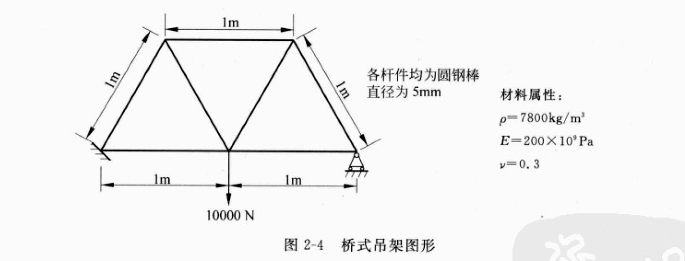
本文档应用 ABAQUS/Standard 进行模拟, 确定结构中杆件的静位移和峰值应力.
操作流程
一个完整的仿真分析过程一般由三个明确的步骤组成: 前处理, 模拟计算, 后处理. 若使用商业软件进行仿真. 模拟计算步骤是封闭的, 用户只需要在前处理阶段提供模拟计算的参数即可. 因此, 使用商业软件进行仿真分析的工作量主要体现在前处理阶段.
对于桥式吊架, 需进入 ABAQUS/CAE 的以下功能模块并依次完成如下任务:
- Part(部件): 绘制二维几何模型, 并创建代表桁架的部件
- Property(特性): 定义材料参数和析架的截面性质
- Assembly(装配): 装配模型
- Step(分析步): 设置分析过程和输出要求
- Load(载荷): 对析架施加载荷和边界条件
- Mesh(网格): 对析架进行网格划分
- Job(作业): 生成一个作业并提交进行分析计算
- Visualization(可视化): 观察分析结果
其中, 1,2,3,5,6属于前处理阶段; 4,7属于模拟计算阶段; 8属于后处理阶段. 下面将详细介绍.
量纲系统
在进入 ABAQUS 仿真之前, 用户需要自己确定仿真用到的量纲系统. 有些仿真软件用户可以设置仿真所使用的单位体系, 而 ABAQUS 的输入并没有指定量纲, 因此用户所有的输入数据必须指定一致性的量纲系统.
创建部件
部件定义了模型的几何形体, 即实现CAD的功能. 用户可以在 ABAQUS/CAE 环境中直接建立部件, 也可以从其它软件建立的几何体或有限元网格导入.
创建材料
创建材料即确定材料的本构方程. ABAQUS 提供了多种本构模型, 用户只需要提供某一本构模型所需要的参数1即可. 如图所示
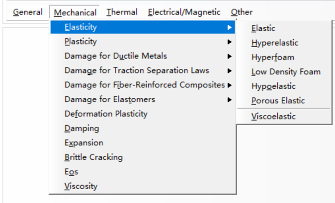
作者可以认出来的本构有:
- 弹性(Elasticity)
- 塑性(Plasticity)
- 韧性金属损伤(Damage for Ductile Metals)
- 纤维加强复合材料损伤(Damage for Fiber-Reinforce Composites)
- 脆性断裂(Brittle Cracking)
- 黏性(Viscosity)
- ...
对于本实例, 桁架的杆件是钢制杆件, 并假设各向同性线弹性, 因此用户只需要给定2个参数. 在本例中, 用户给定的参数为:
- 杨氏模量: 200GPa
- 泊松比: 0.3
定义和赋予截面属性
截面属性是材料力学中被简化的一个几何尺度. 用户需要在 Property 模块中创建一个截面(Section). 对于桁架单元, 用户只需要提供截面面积参数即可. 值得提出的是, 若赋予梁单元的截面属性, 则还需要额外提供梁单元形状(Beam Shape)信息, 如图所示.
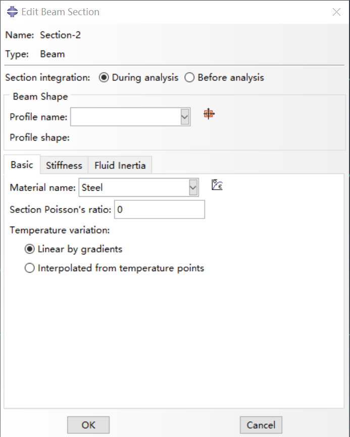
定义装配
作者并不清楚 ABAQUS 这一步想干什么. 在有限元理论当中, 装配(Assembly)是指将单元刚度矩阵组装成整体刚度矩阵, 即单元局部坐标系映射到整体坐标系. 这一过程类似于参考文献提到的:
每一个部件都创建在自己的坐标系中,在模型中彼此独立. Assembly (装配)模块中, 通过创建各个部件的实体(instance)并在整体坐标系中将它们相互定位, 用户能够定义装配件的几何形状. 尽管一个模型可能包含多个部件, 但只能包含一个装配件.
作者困惑的是, ABAQUS 在定义装配之前还没有划分网格单元, 这怎么装配啊?
设置分析过程
在这一步骤中, 用户需要完成两部分工作: 创建分析步; 设定输出数据.
在本实例中, 只考虑桁架的静态响应. 这是个单一事件, 只需要单一分析步进行模拟. 因此, 整个分析由两个步骤组成:
- 一个初始步(initial step), 施加边界条件, 约束桁架的端点;
- 一个分析步(analysis step), 在桁架的中心施加集中力.
ABAQUS/CAE 会自动生成初始步, 但是用户必须应用 Step 模块自己创建分析步. 本实例定义分析步的类型为静态线性摄动步.
有限元分析中会创建大量的输出数据. ABAQUS 允许用户控制和管理这些输出数据, 从而只产生需要用来说明模拟结果的数据. ABAQUS 分析中可以输出以下4种类型的数据:
- 结果输出保存到一个中间二进制文件中, 由 ABAQUS/CAE应用于后处理.
这个文件称为ABAQUS输出数据库文件,文件后缀为
.odb - 结果以打印列表的形式输到 ABAQUS 数据(
.dat)文件中. 仅在 ABAQUS/Standard 有输出数据文件的功能 - 重启动数据用于继续分析过程, 输出在 ABAQUS
重启动(
.res)文件中 - 结果保存在一个二进制文件中, 用于第三方软件进行后处理,写入到 ABAQUS
结果(
.fil)文件
注: ABAQUS 文件系统各种类型文件如表所示(摘自 ABAQUS 6.12有限元分析从入门到精通)
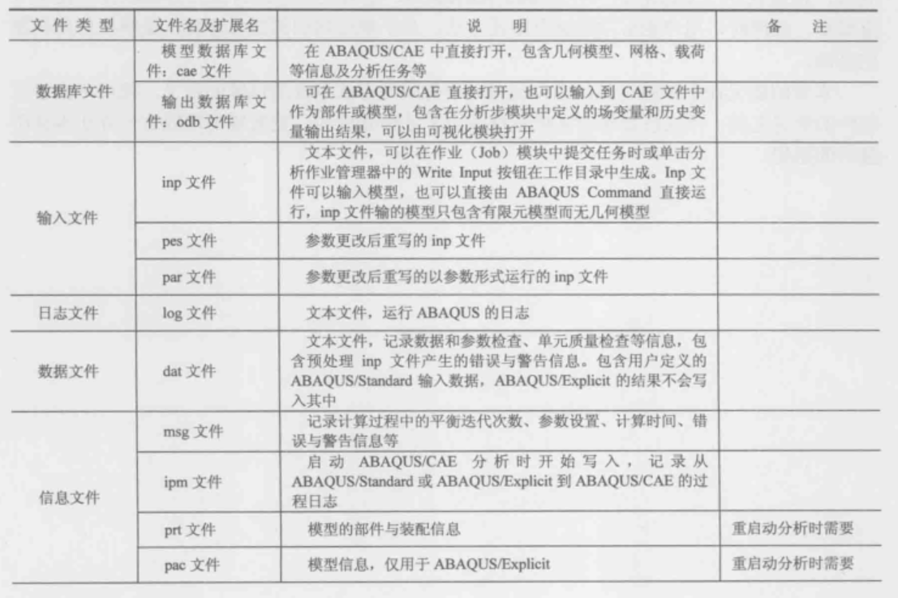
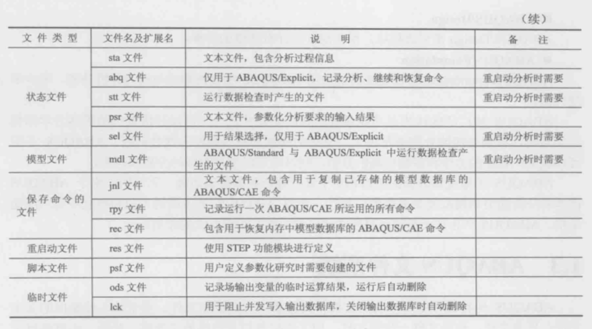
在模型上施加边界条件和载荷
施加的条件, 例如边界条件 (boundary condition) 和载荷 (loads), 是与分析步相关的, 即用户必须指定边界条件和载荷在哪个或哪些分析步中起作用. 现在, 已经定义了分析中的步骤, 可以应用 Load (载荷) 模块定义施加的条件.
在桁架上施加边界条件
ABAQUS 平移和转动自由度的标识如图所示
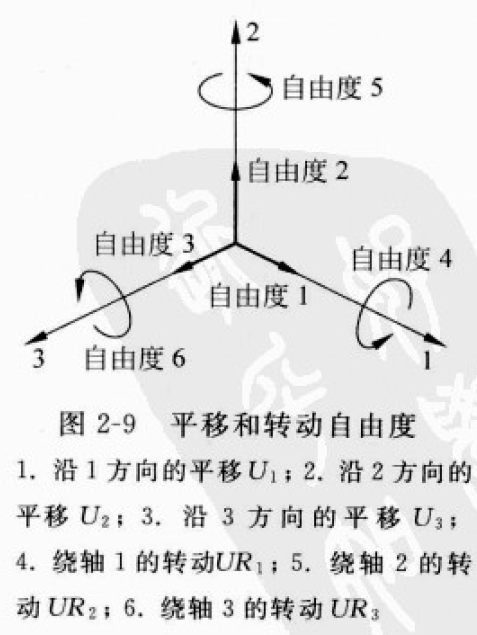
在施加边界条件时需注意:
- 若选择 Initial(初始步) 作为边界条件起作用的分析步, 则所有指定在初始步的力学边界条件必须赋值为0, 该条件是在 ABAQUS/CAE 中自动强加的.
桁架的自由度约束如图所示
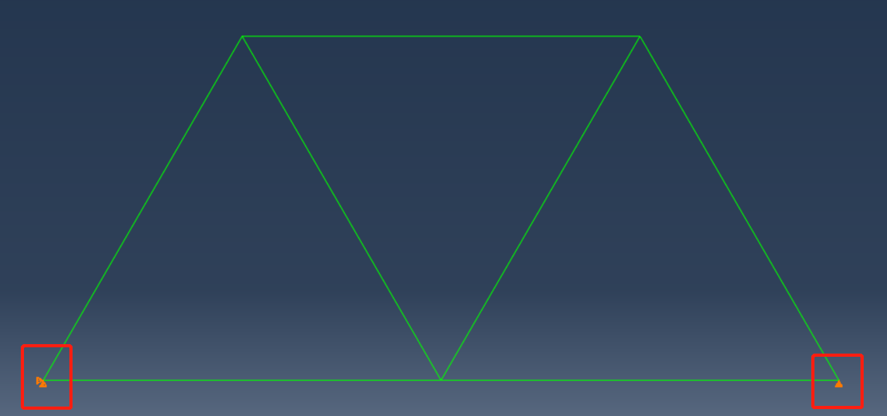
在桁架上施加载荷
在本实例种, 10kN的集中力施加在桁架底部中点的轴2负方向, 载荷施加在分析步模拟中创建的线性摄动步中. 如图所示
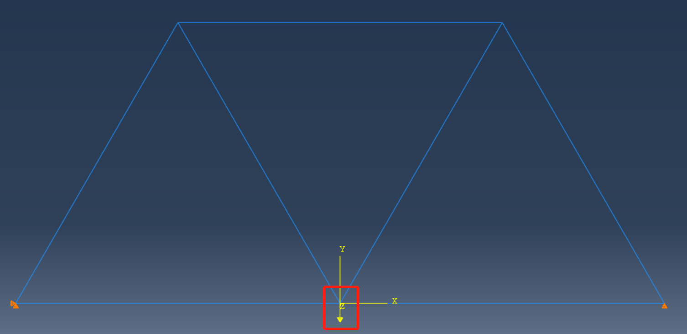
模型的网格划分
应用 Mesh(网格) 模块可以生成有限元网络. 本实例中, 使用二维桁架(Truss)单元模拟吊架. 二维桁架模型在 ABAQUS 单元标号为 T2D2单元.
创建分析作业
Submission.
后处理
显示和设置变形形状图
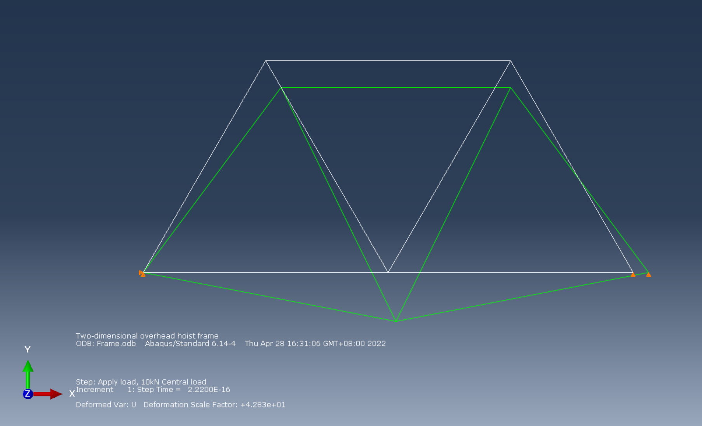
数据列表报告
1 | ******************************************************************************** |
踩坑内容
定义装配
在定义装配时正确的设置如下:
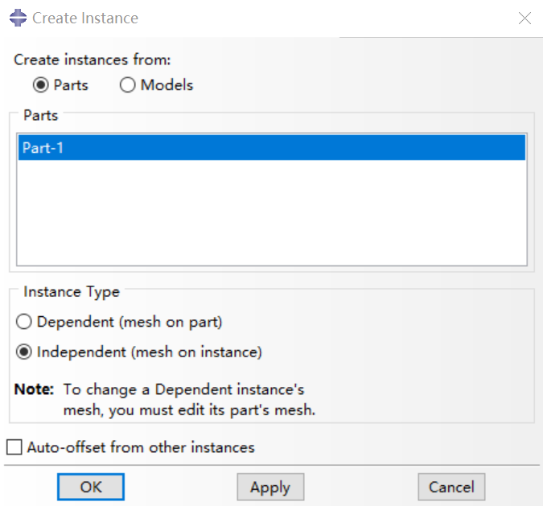
作者原本选择的是 Dependent选项, Mesh 阶段不能划分网格.
定义边界条件和载荷
在定义边界条件时, 提示区会出现如下提示:
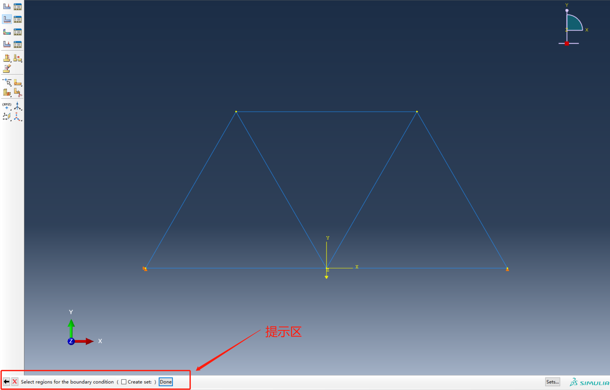
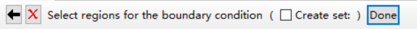
若勾选 Create set 选项, 在创建分析作业阶段提交时会报错.
模拟计算的参数包括但不限于: 数值算法选择, 输出物理量, 时间步长等↩︎